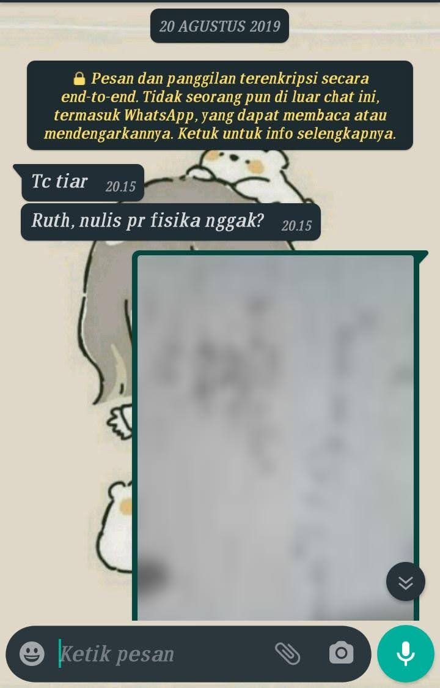
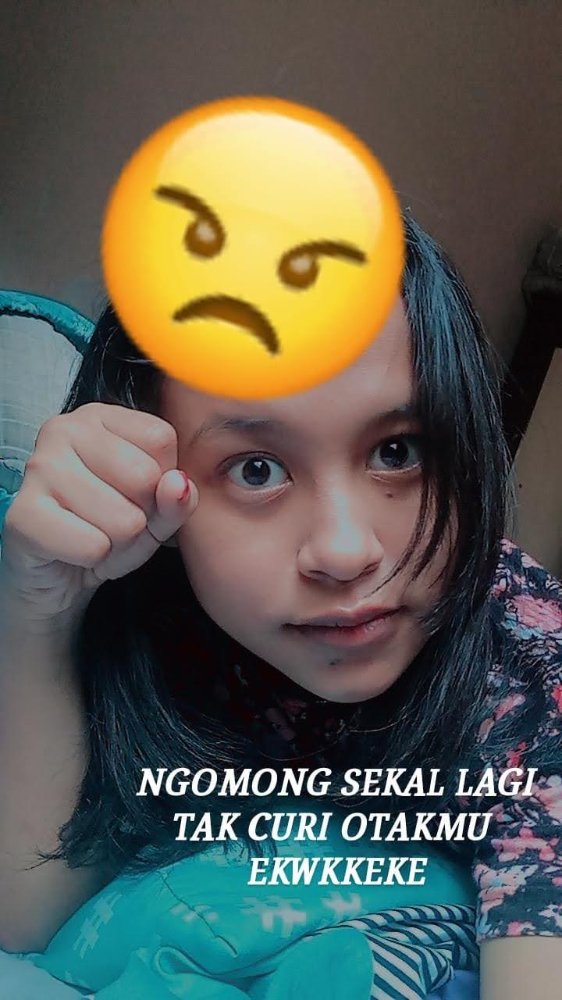
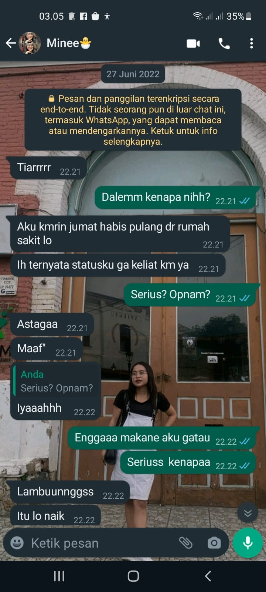

foto
Dulu awal" liat kamutu gada espek bakal bisa deket yoo.
Waktu kelas X aja kamu sering mainnya sm nau, indah, eri, sm dini kann. Aku disitu yaa cuma kenal sekedarnya ajaa
Inget banget dulu awal aku tau namamu tu krn Deka nanyain materi yang di papan tuliss gitu. Kyk tanya "Ruth, fotokke " trs dlm hati tu mikir, ohh ini namane ruth, trs tau agamamu kristen juga krn waktu itu ada kumpulan apa gt hehe.
Kamu seringe duduk depan wkwk, dulu pernah aku dicoblangin ama indah dan disitu km ketawa" ajaa. Terus pertama kali chat kamu ya akuu wkwk mana formal banget lagii.

Udaa si kelas 10 hanya itu kek e yang offline, trs semester 2 online ...
SEMESTER 2 KELAS 10
Nahh disini mulai nihh, jujur kalo gmeet ato zoom kan sering banget liat pp orang gitu yaa, nah krn waktu dulu aku incer floryn jadi yang ta liat mesti dia dulu, nah tapi gak lama tu mesti kedistrek ama kamu gitu loo byy wkw
ehh waktu itu blm ada panggilan byy sii. Tugas berjalan, salah satu tugas ada yang tanya akuu, dan kamu chat duluan wkwk, akupun kadang. Samoe ujian ituu masih formal bangett bahasanyaa
Cuma ya itu kamu pinter banget nyairin suasana gitu loo kek yang kayak heboh sendiri gituu wkwk.

Nah di juli 2020 tu kamu minta jawaban ujian fisikaa. Aku dapet dr guru lesku krn emng kita ngerjain bareng gituu, lgsng ta kirim km aja jawabane. Mungkin dr foto itu kyk sogokan kali ya ben aku luluhh tp emng luluh beneran si wkwk
Aku tu kan kalo gemes sm orang dulu sering manggil "sayang" misal ki, kita debat apa gitu trs maksudku tu gini loo sayanggg gituu anjir kek dulu aku juga bingung knp kata itu bisa terucap segampang ituu. akhirnya dari sering tanya tugas segala macem lah sampai cerita kemana"
Sampe akutu pernah diancem eh bukan diancem si lebih ke diingetin gt ama nau, bahwa kalo ngasi jawaban tu tugas aja jgn sampe ulangan gituu, trs kata nau km kek dijelek" in gitu, sering heboh sendiri, terus apa" kek pengen nimbrung gituu. Tp ini dulu loyaa jangan mbo ambil hatii hehe
Kamu tau lah pemikiran anak SMA umur" segitu, tp aku yang kyk yaa kalaupun bener ga ada masalah diaku si, krn ga ngerugiiin aku jugaa. toh selama aku kenal kamu waktu itu fine" ajaa hehe. Jd yaa ta anggap masukan yang gamasuk wkwk buktinya tetep aja aku kasih jawabannya wkkw.
Hubungan ini berlanjut km sering tanya tugas, akupun klo ada apa" juga ke kamu, bahkan setiap pagi aku chat kamuu, pagi iyutt. Sampai ada rasa nyaman diaku gitu loo, manggil sayang juga uda lumayan sering hehe.
Kelas 11
Terjadinya Panggilan BY
Sebenernya initu ga jauh" dari RAFLY sih, dulu dia pernah punya pacar gituu dan panggilannya waktu itu by gt itu apa si kek aneh gt, trs krn udah nyaman aku coba kata "sayang" itu aku ganti jadi "by" eh gada respon apa-apa malah mbales panggilanku tadi yaa akhirnya ba by ba by sampe sekarang wkwk.
Percintaan
Karena panggilan by itu udah melekat dikamu jadi makin nyaman nih sama kamuu, kek misal kamu cerita ttg percintaanmu jujur aku sakit sii, sampe aku lupaa bawahwa kita tu punya tembok yang tinggi banget gituu wkwk
Aku tanya sekelas yang pernah mbo sukai siapa ik gitu, trs kamu bilang varo dan dia pernah boncengin kamuu gituu, satu satunya cowo yang pernah boncengin kamu selain ayah ya varo kan? dan itu juga jadi lecutan buat aku untuk bisa berani pegang motor hehe makasih banyak yaa
Pertama yang aku tau sebelum hanung di 18 juli 2021 kamu deket sama angkatan laut ituu, emanng si itu mateng banget wkwk. akhirnya NT trs km cerita hanung gituu, yo itu indah tau eri tau wkwkw dan itu berlangsung lamaa kann yang sampe kamu nangis juga waktu ituu, emang rapuh banget ya kamutuu jadi maaf" klo selama ini aku pernah kasar ke kamu yaa hehe
Nah yang bikin aku keinget tembok itu krn km cerita tentang SAM dia seiman sm kamu, udah kenal ayah ibu juga, kemana" bareng dan kamu juga pernah suka sm diaa mybe diane engga kalo dari ceritamu yaa wkwk. Jujur selama denger ceritamu ttg sam juga lumayan panas sii tp ya balik lagi jd kepikir oh gamungkin bisa nih kalo sm ruth nantinya wkwk
Puncaknya di kelas 11 itu waktu bapak meninggal, itu keadaan bapak ga sakit ga apa main bathminton trs lg sesi istirahat gitu jatuh. aku cerita ke entong trs ntong lsng ngaabarin mam srii ato ke grup aku lupaa.
Kamu juga kerumah bareng temen" jugaa bahkan mau ikut ke makam jugaa tp waktu itu ga ketemu si. selang beberapa hari stlhnya kan masa" ujian tu, eri bilang gausa mikir yar kwe ta bantuni ngko, akhirnya beneran eri bantu ngerjain soal, trs kamu juga. tp km lebih ke bantuin nata hatiku sii, krn cewe pertama yang bener" tau aku hbs nangis ya kamuu, cewe pertama juga yang ngajakin aku vc juga wkwk makasih yaa cantikk.
beneran kamu tu firs segalanya diaku wkwk
Udaa akhirnya sampelah ke kelas 12 itu, udah mulai hybrit berangkat juga selang seling, aku beharap banget ketemu kamu dulu, eh ternyata engga sama sekali jadi terima ajaa wkwk. Ga lama hampir mendekati ujian praktik
Sampelah Ujian praktik Kimia yang bikin es cream ituu aku bantuin buat laporannyaa, dan kamu punya sosok pahlawan yaitu mas bagas, krn mau bantuin kamu gt. Disitu aku cemburu banget kek yahh wes lah gada harapan aku jg disini cuma dimanfaatin doang
Ujian prkatik olahraga juga aku perhatiin kamu terus, yaa saat itu kamu pasangane sm varo si ktne yo seneng gituu, sampe di cie" in juga kan ama dindaa wkwk.
SNMPTN
Disini aku seneng bisa ikut dalam list SNMPTN gitu, dimana dikumpulin di Aula trs dijelasin sama pak Budi waktu itu. Sebelumnya tu kita udh hampir lost gasi? Karena km belajar bareng bu Hana
Terus sampai kenal anaknya jugaa, heem byy aku diceritain ituu, tapi yaa perasaanku waktu itu sedih jugaa, ya emng saat itu ada kalila si, cuma kan yang bener" deketnya malah sm kamuu jadi ngerasa kehilangan banget wkwk, kek ruth yg dulu kemana nih, kok ga seheboh biasanya wkwk
Udah tu sampai dikumpulin di ruang kelas sm aa sm yoga juga disitu, pilih" an lah aku masi kekeh undip saat itu. Aku maju buat minta saran, trs kamu tanya sarane dr bapake apa, lalu aku disaranin sm kamu buat pilih teknik kimia sm TI tapi di UIN gt. Cuma mama waktu itu ga setuju karena UIN bukan spesialisnya TI jd ya ga ta ambil. Ituu kalo km ga tanya aku masi diem wkwk
Selanjutnya pun diem lagi, karena waktu itu kan masih hampir bucin"nya sm Tuan El itu kan.
Meninggalnya MBAH
Aku jujur lupa" inget, yang aku inget aku pernah liat statusmu ig kalo gasalah, itu km lg doa terakhir buat Mbahmu, waktu itu krn egoku masi tinggi + sakit hati, jd ta biarin aja gituu. Huaaa ngerasa bersalah gt jane si sekarang, krn waktu aku rapuh aja km bisa disampingku bahkan dibela" in buat dateng kerumah
Beberapa lama setelah ituu, Eri tiba" ngechat aku gitu, trs krn nyaman akhirnya sampe curhat jugaa, nah ditengah" dia curhat tu aku tanya kenapa ga curhat sm ruth dia lg berkabung gituu. Sempet disaranin buat ngucapin RIP jane tp aku enggaa, krn kan yaa paling udah dihibur ama tuanmu itu, lagi" ego sii hehe
Ada waktu lagi eri tu lanjut cerita ttg mas gt, aku masih dengan pertanyaan yang sama juga, eri bilang. Ruth lg bucin wkwk yaa aku ketawa aja sii, walaupun disitu aku jg sakit
aku lupa waktu itu aku respon apa, yang jelass eri bilang, mbok cari ki seng seiman gt loo. Orang bedaa kok masi aja minta harapan ketampar banget sii, makane selama itu aku diem terus.
Pengumuman SNMPTN
Tibalah pengumuman SNMPTN, aku buka sore" jam 3 nan abis sholat, trs ternyata aku ga lulus yaa sedih pasti, mama krn masi dikantor jadi beliau ga liat bareng. Malah yang ribet tu keluarga dari bapak yg nmr 1 tiar gimana ketrima gaa? dan itu ribetnya ke mama akhirnya ya mau gamau mama tanya aku
Aku jelasin klo emng ga ketrima itu, trs ya mama bilang yawes gpp SBMPTN kapan tgl iki mah, yowes dijajal sesuk. Terus ga lama suru list kan yang ketrima siapa aja sekalian jurusannya
Pertama masih aman" aja nih krn kyk maera, trs naura diatas kertas bakalan lulus lah, aku kaget tu kamu lulus, jujur iri sii byy, kok bisa ya tau gt aku unnes ajaa SI gpp wes pendidikan wkwk
Disitu aku ga ngucapin apapun ke kamu sepatah katapun huaa
Bener" lost contact. Sampe dititik aku blok semua aksesmu si, WA ta hapus, IG ta blok, cuma tiktok yang ga ta apa"in dan disitu aku selalu pantau pp mu. oh masihh gituu wkwk
Pen nangis ik ngetik ini huaaa Lama banget aku dieman sm kamu, sampe akhirnya hampir masuk kuliah kamu tiba" chat gitu, aku kan hapal nomer belakangmu ya, trs ada tulisannya juga waktu itu, km chat gini

Karena aku setiap buka telegram tu keinget kata" mu yang jangan berubah itu, jd ya kuterapin, bersyukurnya aku udah lumayan bersahabat sm hatiku juga, plus saat itu hubunganku sm kalila juga hampir kandas, krn dia ga prioritasin aku gitu.
Jadi aku respon seperti itu krn masih ada dikit rasa sayang, krn km emng punya magg kan. Disitu kamu curhat masalah el itu, rencana mau break
Akutukan paling gabisa klo soal diliatin anak kecil gitu wkwk, waktu itu km nunjukin fannya ke aku luluhlahh sampe aku berharap bakal chatan trs lagii wkwkwk
Nah dilain waktu kan kamu mintol buat ajarin word itu, itu keadaan aku abis pulang acara di Jatisari, pulang lgsng ambil leptop, ta kerjain sampe jam 4 kalo gasalah. Selanjutnya chatan biasa,trs aku chat balik ga dibales lagi sampe berapa hari gitu baru dibales lagi,
aku mikir ahh berarti uda ga dibutuhin lg nih, biarin ntar kalo butuh juga bakal balik. EH bener chat lagi, aku mikir lagi, kenapa nih? mesti ada apa" sm pacarnya lagi wkwk yawes cerita" itu
sampai" kalian mau ketemuan dan aku fine" ajaa krn emng uda gada apa" juga kan, ketemu dan nangis bareng jugaa akhire aku dilupain lagii wkwk sampe minta blok segala macem.
sekitar 5 harinan aku blok aku iseng buka aja trs ta biarin, eh kamu chat lagi trs udah bener" selesai ituu
Aku kaget dong kenapa? beneran selesai ga nihh wkwk, akhirnya yaa panggilan byy itu muncul lagi sampai sekarang.
TAMAT